|
|
|
|
|
|
|
Технический бюллетень TNP009 04.03.2010 г. Применение УЗИП класса II.
|
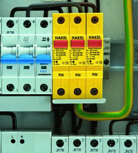 |
|
Риc.1. УЗИП класса II PIII280 установленные в РЩ. |
УЗИП класса II, согласно ГОСТ Р 51992-2002 (МЭК 61643-1-98), применяются для защиты оборудования низковольтных силовых распределительных систем до 1000 В от импульсных перенапряжений источниками которых являются коммутации индуктивных и емкостных нагрузок, короткие замыкания в распределительных электрических сетях высокого и низкого напряжения или в качестве второй ступени защиты в случае удара молнии в систему молниезащиты объекта или линию электропередач.
Основной задачей УЗИП класса II является ограничение импульсных перенапряжений до значений соответствующих стойкости изоляции электрооборудования категории II или I, согласно ГОСТ Р 50571.19. Для большинства электронного и электротехнического оборудования импульсные перенапряжения амплитудными значением менее 1,5 кВ считаются безопасными.
Основными техническими характеристиками УЗИП класса II являются:
· род тока ( переменный, постоянный);
· максимальное длительное рабочее напряжение Uc;
· максимальный разрядный ток Imax (8/20);
· номинальный разрядный ток In(8/20);
· значение уровня напряжения защиты Up;
· максимальные рекомендованные параметры защиты от сверхтока.
Для определения способности выдерживать токовые нагрузки УЗИП класса II испытываются номинальным разрядным током In 8/20 мкс, импульсным напряжением 1,2/50 мкс и максимальным разрядным током Imax 8/20 мкс.
Для производства УЗИП класса II в качестве нелинейных элементов используются оксидно-цинковые варисторы, газонаполненные разрядники и их комбинации.
|
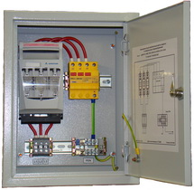 |
|
Риc.2. УЗИП класса II SPU3 280 установленное в ЩЗИП®. |
УЗИП на основе варисторов устанавливаются в цепи L-N, L-PEN, L-PE. При подаче напряжения на полюса УЗИП через варистор протекает ток утечки в несколько мкА. В электрических сетях где по условиям эксплуатации недопустимо наличие токов утечки применяются УЗИП состоящие из варистора и газонаполненного разрядника включенных последовательно, например PIII230 GT (DS).
УЗИП на основе газонаполненного разрядника устанавливаются в цепь N-PE. Установка УЗИП на основе газонаполненного разрядника в цепи L-N, L-PEN, L-PE запрещена, так как из-за длительного воздействия сопровождающего тока УЗИП выйдет из строя.
УЗИП класса II выпускаются в однофазном и трехфазном исполнении. Корпус УЗИП может быть монолитным или состоящим из сменных модулей и базы для подключения к сети и креплению к DIN-рейке 35 мм.
Протекание импульсов тока через варистор ускоряет процессы старения и как следствие происходит «снижение» вольт-амперной характеристики и увеличение тока утечки. Возрастание тока утечки варистора вызывает рост температуры варистора, что в крайних случаях может привести к возникновению пожара. Для предотвращения аварийных ситуаций связанных с перегревом варисторов в УЗИП устанавливаются терморасцепители, которые разрывают электрическую цепь внутри УЗИП, в случае нагрева варистора до температуры 120 °С. В случае срабатывания терморасцепителя УЗИП подлежит замене.
УЗИП класса II на основе варисторов имеют визуальную или визуальную и дистанционную сигнализацию рабочего состояния. В наименовании УЗИП с визуальной и дистанционной сигнализацией рабочего состояния присутствует индекс DS, например PIII280 DS.
Для УЗИП класса II производства компании Hakel, выпускающихся в монолитном корпусе визуальный контроль рабочего состояния проводится с помощью индикатора красного цвета. В исправном состоянии УЗИП индикатор утоплен, в аварийном - выдвинут. Для УЗИП со сменными модулями визуальный контроль рабочего состояния УЗИП проводится с помощью индикатора расположенного на корпусе варисторного модуля. В исправном состоянии индикатор имеет зеленый цвет, в аварийном - красный. Удаленный контроль рабочего состояния УЗИП проводится с помощью переключающихся “сухих” контактов дистанционной сигнализации (Таблица 1).
|
Дистанционная сигнализация |
Визуальная сигнализация | ||
|
Работа |
Авария |
Работа |
Авария |
|
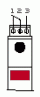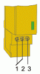 |
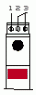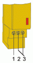 |
|
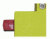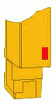 |
|
Таблица 1. Сигнализация рабочего состояния УЗИП класса II. | |||
Компанией Hakel выпускаются УЗИП класса II следующих серий:
PIII (DS) – Однофазные УЗИП класса II ограничивающего типа. Применяются для защиты фазного проводника. Выпускаются на номинальное рабочее напряжение UN = 60, 120, 230, 280, 400, 500, 720 В. Способны отводить импульсы тока Imax(8/20) = 40 кА.
PIIIT (DS) – Однофазные УЗИП класса II ограничивающего типа. Применяются для защиты фазного проводника. Выпускаются на номинальное рабочее напряжение UN = 230, 280 В. Способны отводить импульсы тока Imax(8/20) = 20 кА.
PIIIM (DS) – Однофазные УЗИП класса II ограничивающего типа. Применяются для защиты фазного проводника. Состоят из сменного варисторного модуля и базы для подключения к сети и креплению к DIN-рейке 35 мм. Выпускаются на номинальное рабочее напряжение UN = 60, 120, 230, 280, 400, 500, 720 В. Способны отводить импульсы тока Imax(8/20) = 40 кА.
PIIIMT (DS) – Однофазные УЗИП класса II ограничивающего типа. Применяются для защиты фазного проводника. Состоят из сменного варисторного модуля и базы для подключения к сети и креплению к DIN-рейке 35 мм. Выпускаются на номинальное рабочее напряжение UN = 230, 280 В. Способны отводить импульсы тока Imax(8/20) = 20 кА.
PIII GT (DS) – Однофазные УЗИП класса II комбинированного типа. Применяются для защиты фазного проводника в сетях где по условиям эксплуатации недопустимо наличие токов утечки. Выпускаются на номинальное рабочее напряжение UN = 230 В. Способны отводить импульсы тока Imax(8/20) = 20 кА.
B20 – УЗИП класса II коммутирующего типа. Применяются для защиты нулевого проводника. Выпускаются на номинальное рабочее напряжение UN= 230 В. Способны отводить импульсы тока Imax(8/20) = 50 кА.
B20M – УЗИП класса II коммутирующего типа. Состоит из сменного модуля с разрядником и базы для подключения к сети и крепления на DIN-рейку 35 мм. Применяются для защиты нулевого проводника. Выпускаются на номинальное рабочее напряжение UN= 230 В. Способны отводить импульсы тока Imax(8/20) = 50 кА.
SPU1 (DS) – Однофазные УЗИП класса II комбинированного типа. Предназначены для защиты фазного L/N и нулевого N/PE проводников. Выпускаются на номинальное рабочее напряжение UN = 120, 240, 280 В. Способны отводить импульсы тока Imax(L/N)(8/20)= 40 кА, Imax(N/PE)(8/20)= 50 кА.
SPUT1 (DS) – Однофазные УЗИП класса II комбинированного типа. Предназначены для защиты фазного L/N и нулевого N/PE проводников. Выпускаются на номинальное рабочее напряжение UN = 240, 280 В. Способны отводить импульсы тока Imax(L/N)(8/20)= 20 кА, Imax(N/PE)(8/20)= 50 кА.
SPUM1 (DS) – Однофазные УЗИП класса II комбинированного типа. Предназначены для защиты фазного L/N и нулевого N/PE проводников. Состоят из сменного варисторного модуля, модуля с разрядником и базы для подключения к сети и креплению к DIN-рейке 35 мм. Выпускаются на номинальное рабочее напряжение UN = 240, 280, 385 В. Способны отводить импульсы тока Imax(L/N)(8/20)= 40 кА, Imax(N/PE)(8/20)= 50 кА.
SPU3 (DS) – Трехфазные УЗИП класса II комбинированного типа. Предназначены для защиты фазных L/N и нулевого N/PE проводников. Выпускаются на номинальное рабочее напряжение UN = 208/120, 416/240, 476/280, 680/400 В. Способны отводить импульсы тока Imax(L/N)(8/20)= 40 кА, Imax(N/PE)(8/20)= 50 кА.
SPUT3 (DS) – Трехфазные УЗИП класса II комбинированного типа. Предназначены для защиты фазных L/N и нулевого N/PE проводников. Выпускаются на номинальное рабочее напряжение UN = 416/240, 476/280 В. Способны отводить импульсы тока Imax(L/N)(8/20)= 20 кА, Imax(N/PE)(8/20)= 50 кА.
SPUM3 (DS) – Трехфазные УЗИП класса II комбинированного типа. Предназначены для защиты фазных L/N и нулевого N/PE проводников. Состоят из сменных варисторных модулей, модуля с разрядником и базы для подключения к сети и креплению к DIN-рейке 35 мм. Выпускаются на номинальное рабочее напряжение UN = 416/240, 476/280, 667/385 В. Способны отводить импульсы тока Imax(L/N)(8/20)= 40 кА, Imax(N/PE)(8/20)= 50 кА.
SPUM PV (DS) – УЗИП класса II ограничивающего типа для защиты оборудования силовых цепей фотоэлектрических систем. Выпускаются на номинальное рабочее напряжение UN = 200, 400, 600, 800, 1000 В. Способны отводить импульсы тока Imax(L/PE) (8/20)= 40 кА.
Схемы подключения и монтаж УЗИП класса II
УЗИП может подключаться между фазами, между фазой и землей, между фазой и нейтралью, между нейтралью и землей, или в любой из комбинаций [1]. Под землей подразумевается главный заземляющий шинопровод (ГЗШ) или главный заземляющий зажим (ГЗЗ), соединение с которым будет кратчайшим. Электрические схемы УЗИП серий SPU собраны по схеме подключения для защиты от противофазных (поперечных) перенапряжений в цепи провод-провод, как наиболее опасных по воздействию на защищаемое оборудование. В таблице 2 представлены типовые схемы подключений УЗИП класса II для сетей с различными типами систем заземления.
Таблица 2. Схемы подключения УЗИП класса II для сетей с различными типами систем заземления.
|
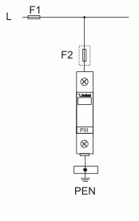 |
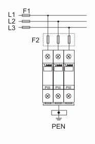 |
|
А) Подключение УЗИП класса II серии PIII (DS) в однофазную электрическую сеть с системой заземления типа TN-C. |
Б) Подключение УЗИП класса II серии PIII (DS) в трехфазную электрическую сеть с системой заземления типа TN-C. |
|
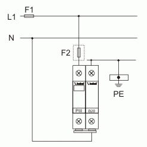 |
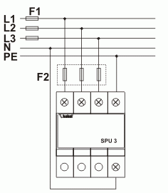 |
|
В) Подключение УЗИП класса II серии PIII (DS) и В20 в однофазную электрическую сеть с системой заземления типа TN-S. |
Г) Подключение УЗИП класса II серии SPU3 (DS) в трехфазную электрическую сеть с системой заземления типа TN-S. |
|
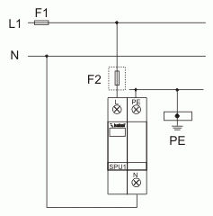 |
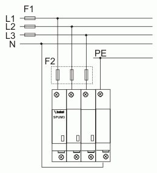 |
|
Д) Подключение УЗИП класса II серии SPU1 (DS) в однофазную электрическую сеть с системой заземления типа TT. |
Е) Подключение УЗИП класса II серии SPUM3 (DS) в трехфазную электрическую сеть с системой заземления типа TT. |
|
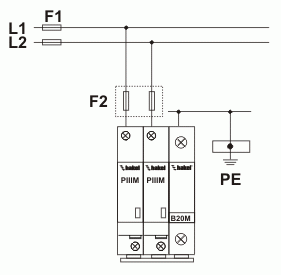 |
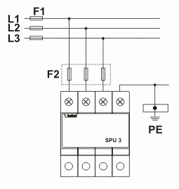 |
|
Ж) Подключение УЗИП класса II серии PIIIM (DS) и B20M в однофазную электрическую сеть с системой заземления типа IT. |
З) Подключение УЗИП класса II серии SPU3 (DS) в трехфазную электрическую сеть с системой заземления типа IT. |
Для защиты УЗИП от тока короткого замыкания, который УЗИП не в состоянии отключить самостоятельно, последствий его воздействия на электроустановку и обеспечения непрерывности подачи электропитания, последовательно с УЗИП включаются дополнительные защитные устройства от короткого замыкания – предохранители или автоматы. Для определения необходимости установки дополнительного защитного устройства следует сравнить номинальный ток защитного устройства установленного перед УЗИП IF1 с номинальным током дополнительного защитного устройства рекомендуемого производителем IF2. Компания Hakel для защиты УЗИП класса II рекомендует применять предохранители с номинальным током 160, 100 А и характеристикой gG.
· IF1 > IF2 – устанавливается дополнительный предохранитель,
· IF1 < IF2 – без дополнительного предохранителя.
УЗИП класса II устанавливаются в пределах 1 - 2 зон молниезащиты (в соответствии с МЭК 1312-1, МЭК 62305 и CO-153-34.21.122-2003) в распределительные щиты объекта. Для защиты оборудования объектов ограниченных размеров допускается объединение зон молниезащиты с установкой на их границах УЗИП нескольких ступеней защиты. В этом случае УЗИП класса II устанавливаются в пределах 0A(B) - 1 зон молниезащиты во вводно-распределительном устройстве или главном распределительном щите после УЗИП класса I.
В случае отсутствия места в существующих распределительных щитах возможен монтаж УЗИП класса II в дополнительные распределительные щитки, устанавливаемые рядом с основными. Такие щитки под торговой маркой ЩЗИП® выпускает ЗАО «Хакель Рос». Каждый ЩЗИП® изготавливается по индивидуальному проекту, учитывающему все особенности объекта. Для выбора и заказа ЩЗИП® необходимо заполнить опросный лист, размещенный в разделе Информация и переслать в технический одел ЗАО «Хакель Рос».
При наличии в сети устройства защитного отключения (УЗО) УЗИП класса II подключаются до УЗО по ходу энергии, а УЗИП класса III - после. В электрических сетях где совместно применяются УЗИП и УЗО рекомендуется использовать УЗО с временной задержкой срабатывания типа «S» (селективные).
При подключении проводников к УЗИП необходимо избегать образования петель из-за воздействия электродинамических сил в момент прохождения импульсных токов, совместной прокладки защищенного и незащищенного участков проводника, защищенного и заземляющего проводников. Размещение УЗИП должно быть выполнено таким образом, чтобы расстояния между точкой подключения, УЗИП и землей были минимальными, а соединительные проводники между ними проложены кратчайшим путем, так как из-за паразитной индуктивности на соединительных проводниках в момент прохождения импульсного тока возникает падение напряжения, которое в свою очередь прикладывается к нагрузке.
Для уменьшения уровня напряжения прикладываемого к нагрузке рекомендуется использовать соединительные проводники длиной не более 0,5 м. а также применять схему подключения типа «V»- соединение, при котором УЗИП «последовательно» включается с нагрузкой.
УЗИП класса II обеспечивают безопасный уровень напряжения защиты для электрооборудования объекта однако для компенсации падения напряжения на длинных проводниках, для защиты высокочувствительного оборудования, дополнительно непосредственно возле защищаемого оборудования, устанавливаются УЗИП класса III.
При измерениях, производимых на электроустановке, когда методикой измерений предусматриваются испытания высокими напряжениями (например, проверка сопротивления изоляции) необходимо отключать УЗИП класса II от электроустановки. Несоблюдение этого правила приведет к искажению результатов измерения или в худшем случае к выходу из строя УЗИП.
Литература:
1. ГОСТ Р 51992-2002 (МЭК 61643-1-98) «Устройства для защиты от импульсных перенапряжений в низковольтных силовых распределительных системах. Часть 1. Требования к работоспособности и методы испытаний»;
4. СО–153-34.21.122-2003 «Инструкция по устройству молниезащиты зданий, сооружений и промышленных коммуникаций»;
5. ГОСТ Р 50571.19-2000 «Электроустановки зданий. Часть 4. Требования по обеспечению безопасности. Глава 44. Защита от перенапряжений. Раздел 443. Защита электроустановок от грозовых и коммутационных перенапряжений»;
6.ГОСТ Р 50571.26-2002 (МЭК 60364-5-534-97) «Электроустановки зданий. Часть 5. Выбор и монтаж электрооборудования. Раздел 534. Устройства для защиты от импульсных перенапряжений».
7. ГОСТ Р 50571.18-2002 (МЭК 60364-4-442-93) «Электроустановки зданий. Часть 4. Требования по обеспечению безопасности. Глава 44. Защита от перенапряжений. Раздел 442. Защита электроустановок до 1 кВ от перенапряжений вызванных замыканиями на землю в электроустановках выше 1 кВ».
8. ПУЭ (7-е изд.);
9.Технические материалы компании Hakel.